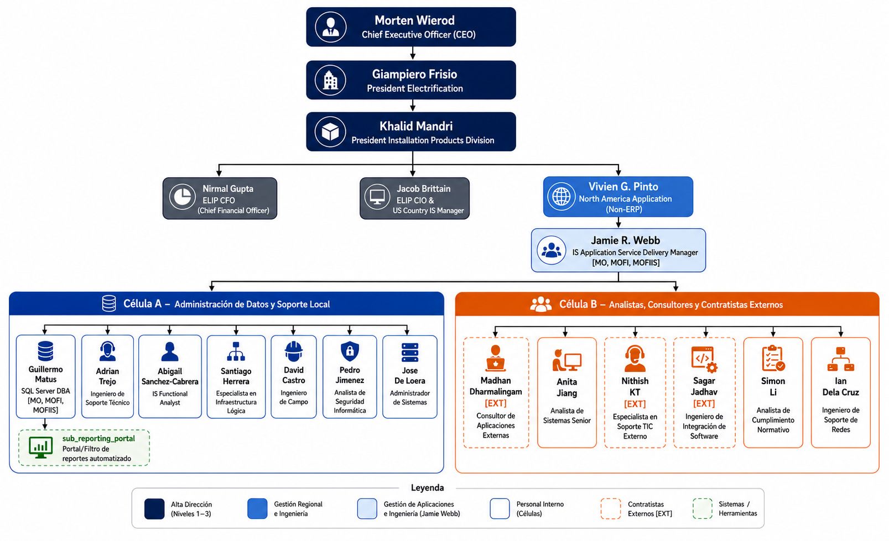

1. Contexto de la Organización
El presente proyecto de consultoría académica detalla el diseño y planeación de un Sistema de Gestión de Seguridad de la Información (SGSI) bajo la norma internacional ISO/IEC 27001:2022 para la empresa multinacional ABB, específicamente enfocado en la división IS Application Service Delivery Organization (encargada del soporte de la cartera de activos heredados de GE Industrial Solutions en Norteamérica).
1.1. Objetivos, Misión y Visión
Misión: Impulsar la transformación de la sociedad y la industria para lograr un futuro más productivo y sostenible mediante la electrificación y la automatización inteligente. El lema principal de ABB es "Engineered to Outrun".
Visión: Consolidarse como el socio de servicio de confianza número uno que garantiza que los activos eléctricos de automatización sean fiables, estén disponibles y completamente preparados frente a la obsolescencia técnica.
Objetivos: Implementar un marco operativo robusto basado en ISO 27001:2022 para proteger la información en el soporte técnico y el mantenimiento de infraestructuras críticas, adaptándose a las regulaciones específicas de la industria de energía.
1.2. Fundación y Cuerpo Académico
ABB se formó en 1988 tras la fusión de la sueca ASEA y la suiza BBC. Un hito crítico para este caso fue la adquisición de GE Industrial Solutions en 2018, integrando marcas de automatización históricas como AEG, Agut y Vynckier. La investigación académica en el SGSI de la división de Soporte Técnico se realiza en colaboración con el cuerpo de investigación de ciberseguridad industrial y redes de la Universidad Politécnica de San Luis Potosí.
1.3. Organigrama
La estructura jerárquica por puestos de la división IS Application Service Delivery involucrada en el SGSI se detalla a continuación:
| Departamento | Puesto | Función en el SGSI |
|---|---|---|
| Alta Dirección | Director Ejecutivo (CEO) / CISO | Establecer la dirección estratégica y firmar la Política de Seguridad de la Información (PSI). |
| Servicios de Electrificación | Gerente de Producto de Ciclo de Vida | Gestionar la obsolescencia y liderar el soporte técnico de activos heredados de GE. |
| Ingeniería de Campo | Ingeniero de Soporte Técnico Senior | Ejecutar técnicas de mantenimiento y operación segura de desincorporación en sitio. |
| Manejo de Activos e IS | Manager Continental de Ciberseguridad | Definir la estrategia de ciberseguridad regional, coordinar la gestión de riesgos y auditar logs. |
| Aplicaciones no-ERP | Manager Continental para Aplicaciones no-ERP | Garantizar la seguridad de las aplicaciones no-ERP y supervisar el cumplimiento de controles. |
| Bases de Datos | Administrador de Base de Datos SQL Server | Implementar controles de acceso, cifrado, backups y monitorear actividad en bases de datos. |
| Auditoría | Auditor Interno de SGSI | Realizar evaluaciones periódicas de cumplimiento y proponer acciones de mejora. |
Visualización de la estructura jerárquica y flujos de reporte en la división:

2. Alcance del SGSI
El límite del SGSI de ABB se define formalmente como:
- Departamento: Servicios de Electrificación (División de activos heredados GE).
- Proceso Elegido: Gestión de Vulnerabilidades y Eliminación Total de Información en servidores de control industrial retirados del servicio.
- Activo Elegido: Servidor de Almacenamiento de Datos de Configuración (Main Controller Server).
- Límite Físico y Lógico: Abarca desde la identificación del activo obsoleto en la planta de San Luis Potosí hasta la validación de la eliminación definitiva de datos y configuraciones de red, excluyendo el desecho físico del hardware.
2.1. Referencias Normativas
Se adoptan y justifican las siguientes normas:
- ISO/IEC 27001:2022 (Cláusula 8.10 - Eliminación de Información): Garantiza que la eliminación de datos sea definitiva y evite la recuperación de planos industriales.
- ISO/IEC 27002 (Control 8.11 - Enmascaramiento de datos): Aplicada para el enmascaramiento de información confidencial en los reportes técnicos generados.
- ISO/IEC 27017 (Seguridad Cloud): Regula la seguridad de las copias de seguridad de configuración en la nube previas a la sanitización local.
- ISO/IEC 27019 (Seguridad en Sector Energía): Específica para sistemas de control distribuido (DCS) y control industrial operados por ABB.
3. Inventario de Activos (Mapeo Completo)
De acuerdo con el estándar, se mapearon 40 activos críticos que interactúan en el alcance (20 Internos y 20 Externos):
20 Activos Internos
- I1. Credenciales de Acceso (Usuarios y contraseñas).
- I2. Código fuente (Algoritmos de automatización).
- I3. Servidores de Almacenamiento (Base de datos).
- I4. Backups locales (Cintas y discos de respaldo).
- I5. Logs de auditoría (Registro de accesos).
- I6. Bases de datos PII (Datos de personal y clientes).
- I7. Manuales y Planos (Propiedad Intelectual).
- I8. Configuraciones de Red (Configuraciones de Switches/Firewalls).
- I9. Personal y Ética (Equipo humano operativo).
- I10. Estaciones de Ingeniería (Laptops de diagnóstico).
- I11. CCTV (Monitoreo de seguridad física).
- I12. Evidencia Digital (Firmas y hashes de auditoría).
- I13. Inventario de Activos (Documento oficial).
- I14. Política de Seguridad (PSI rectora).
- I15. Servidores DCS (Sistemas de control en planta).
- I16. Certificados Digitales (Llaves SSL/TLS de red).
- I17. Cultura Organizacional (Nivel de conciencia).
- I18. Software ERP (Sistema administrativo de bajas).
- I19. Infraestructura de Red (Switches y cableado físico).
- I20. Patentes de Automatización (Propiedad Industrial).
20 Activos Externos
- E1. Servicios Cloud Azure/AWS/GCP.
- E2. Soporte TIC Externo (Proveedores de servicios).
- E3. Leyes de Privacidad (GDPR, LFPDPPP).
- E4. Repuestos OEM (Hardware GE/proveedores).
- E5. Inteligencia de Amenazas (Threat Intel externa).
- E6. Licencias de Terceros (Red Hat Enterprise Linux).
- E7. Suministro de Energía Externa (Red eléctrica pública).
- E8. Datos de Configuración de Clientes (Esquemas de plantas).
- E9. Bibliotecas de Código Abierto (GitHub/Open Source).
- E10. Certificaciones ISO 27001 (Auditores certificadores).
- E11. Proveedores de Internet (ISP y redundancia).
- E12. Repositorios de Código Externos.
- E13. Filtrado Web Externo.
- E14. Regulaciones Geopolíticas de Suministro.
- E15. Cambio Climático (Riesgo ambiental).
- E16. Servicios Logísticos y de Transporte.
- E17. Plataformas de Banca Electrónica (Transacciones).
- E18. Redes Sociales Corporativas.
- E19. Sensores IoT Externos (Monitoreo ambiental).
- E20. Accionistas e Inversores (Cumplimiento).
4. Políticas de Seguridad (Gobernanza)
El SGSI define 20 políticas funcionales estructuradas técnicamente:
4.1. 10 Políticas para Activos Internos
- Control de Acceso (Credenciales): Estándar de MFA obligatorio para cuentas de administración en servidores DCS. Procedimiento de revocación en menos de 2 horas tras offboarding.
- Desarrollo Seguro (Código Fuente): Estándar de análisis estático (SAST) antes de subir a repositorios. Lineamiento de seguimiento de pautas OWASP.
- Gestión de Almacenamiento (Servidores): Procedimiento de borrado lógico verificado antes de desincorporar. Estándar de retención de logs de 1 año.
- Respaldo de Datos (Backups): Estándar de copia diaria incremental y semanal completa. Procedimiento trimestral de restauración de prueba.
- Monitoreo de Seguridad (Logs): Línea base de registro de inicios de sesión y escaladas de privilegios en SIEM centralizado.
- Protección de Privacidad (Bases PII): Estándar de enmascaramiento en desarrollo y pruebas. Auditoría semestral de bases de datos.
- Documentación Técnica (Planos): Estándar de clasificación confidencial y almacenamiento cifrado con llave administrada por ABB.
- Configuración de Red (Firewalls): Hardening obligatorio de switches y firewalls según CIS Benchmarks. Control formal de cambios.
- Formación de Personal (Cultura): Certificación anual obligatoria en OWASP Top 10 e ingeniería social para privilegios de administrador.
- Salud de Activos (Laptops): Línea base de EDR activo y actualizaciones críticas de parches de seguridad en máximo 7 días.
4.2. 10 Políticas para Activos Externos
- Seguridad en la Nube (Cloud): Cumplimiento ISO/IEC 27017 verificado semestralmente. Cifrado nativo administrado por el cliente.
- Riesgos de Proveedores (Soporte): Cláusulas obligatorias de confidencialidad (NDA) y auditoría de accesos remotos por VPN.
- Cumplimiento Regulatorio (Leyes): Validación legal de cumplimiento con GDPR y LFPDPPP en la exportación de datos.
- Integridad de Suministros (OEM): Inspección en sandbox de firmware y software externo antes de instalar en producción.
- Inteligencia de Amenazas (Intel): Integración diaria de alertas de CERTs y US-CERT al centro de monitoreo (SOC).
- Software de Terceros (Licencias): Prohibición estricta de bibliotecas de software no validadas o descontinuadas comercialmente.
- Continuidad de Servicios (Energía): Pruebas mensuales de generadores UPS y RTO establecido en 4 horas para procesos críticos.
- Intercambio Seguro (Clientes): Cifrado obligatorio en tránsito para intercambio de datos industriales (SFTP/HTTPS).
- Uso de Código Abierto: Análisis de dependencias (SCA) para evitar vulnerabilidades de software libre.
- Auditorías Externas (Certificación): Procedimiento de preparación y entrega de evidencias firmadas y auditables de forma controlada.
5. Matriz de Riesgo de Seguridad
Mapeo de riesgos basado en la escala cualitativa y cuantitativa de Impacto (1 a 5) y Probabilidad (1 a 5). A continuación se resumen los niveles resultantes de la evaluación de activos:
| ID | Activo Evaluado | Amenaza Identificada | Prob. | Imp. | Riesgo Score | Severidad |
|---|---|---|---|---|---|---|
| I9 | Personal y Ética | Ingeniería Social (Phishing) / Error Humano | 4 | 5 | 20 | EXTREMO |
| E9 | Bibliotecas Código Abierto | Inyección de Malware / Vulnerabilidad de Día Cero | 5 | 4 | 20 | EXTREMO |
| I1 | Credenciales de Acceso | Ataques de Fuerza Bruta / Robo de Token | 3 | 5 | 15 | MUY ALTO |
| I3 | Servidores Almacenamiento | Fuga de Datos Industriales y Configuraciones | 3 | 5 | 15 | MUY ALTO |
| E7 | Suministro de Energía | Corte masivo de red eléctrica comercial | 3 | 5 | 15 | MUY ALTO |
| I5 | Logs de Auditoría | Omisión de registro / Modificación por intrusos | 4 | 3 | 12 | ALTO |
| I8 | Configuración de Red | Modificaciones erróneas / Denegación local | 3 | 4 | 12 | ALTO |
| E2 | Soporte TIC Externo | Fallas en SLA / Fuga de credenciales compartidas | 3 | 4 | 12 | ALTO |
Resumen Estadístico de Riesgos del Proyecto:
- Riesgo Extremo (20-25): 02 activos (Mitigación inmediata requerida).
- Riesgo Muy Alto (15-16): 03 activos (Monitoreo constante).
- Riesgo Alto (10-12): 06 activos (Acciones de endurecimiento).
- Riesgo Medio (5-9): 05 activos (Gestión operativa).
- Riesgo Bajo (3-4): 04 activos (Aceptación del riesgo bajo supervisión).
6. Soporte y Minuta de Avances
Institución: Universidad Politécnica de San Luis Potosí (UPSLP)
Asignatura: CNO V: Seguridad Informática (10° Semestre)
Caso de Estudio: Implementación de SGSI basado en ISO 27001 para ABB (División Electrificación)
6.1. Resumen de Acuerdos de Sesión
- Enfoque de Activos: Se justificó la inclusión de dependencias externas (servicios Cloud, leyes y energía) en el SGSI de ABB al ser vectores que influyen de manera crítica en la operación del soporte de activos GE.
- Mitigación de Puntos Críticos: Los riesgos de nivel Extremo (Ingeniería Social y bibliotecas de código abierto) recibirán tratamiento preventivo a través de capacitaciones simuladas y escaneos de código (SCA).
- Mecanismo de Firma: Se valida la Minuta firmada digitalmente por los investigadores el 11 de mayo de 2026 para garantizar la conformidad técnica.
7. Operación: Protocolo de Desincorporación Segura (PDS)
Para mitigar los riesgos del borrado incompleto del activo crítico (Servidor de Almacenamiento de Datos de Configuración), el equipo de IS Application Service Delivery ejecuta el siguiente Protocolo de Desincorporación Segura (PDS):
7.1 Fases del Protocolo
- 1. Preparación y Validación: Apertura de ticket de baja en ERP. Realización de un snapshot cifrado (AES-256) enviado al repositorio Azure. Bloqueo físico de puertos USB y accesos remotos.
- 2. Ejecución Técnica (Borrado): Sobreescritura lógica irreversible utilizando software certificado (Blancco Drive Eraser) aplicando el estándar NIST SP 800-88 Rev. 1 (Purge) en un entorno limpio sin sistema operativo local residente.
- 3. Validación y Certificación: Comprobación de que no existen patrones de datos legibles en los sectores del disco y emisión del Certificado de Destrucción firmado.
7.2 Matriz de Tratamiento Operativo de Riesgos
| Riesgo Inicial | Score Inicial | Acción de Tratamiento (Control Operativo) | Residual |
|---|---|---|---|
| Fuga de datos por borrado de disco incompleto | 15 (Muy Alto) | Ejecución de sanitización NIST SP 800-88 Purge y verificación de hashes bit a bit. | Bajo (04) |
| Robo de credenciales administrativas en el desecho | 15 (Muy Alto) | Uso de tokens físicos MFA de Microsoft Entra para autorizar el comando final de borrado. | Medio (05) |
| Infiltración de malware por herramientas de terceros | 20 (Extremo) | Uso exclusivo de cargador ejecutable externo (bootable) verificado en red aislada. | Medio (08) |
7.3 Mapa de Implementación y Responsables
| Paso | Actividad Operativa | Responsable | Evidencia Tangible |
|---|---|---|---|
| 1 | Inventario y Clasificación | Ing. Alan Gilberto Sánchez Zavala | Etiqueta física y lógica de "Activo en Proceso de Baja". |
| 2 | Aislamiento de Red | Ing. Santiago de la Cruz Martínez Lara | Logs de desconexión lógica y física en switch central. |
| 3 | Sanitización NIST Purge | Ing. Brian Salvador Espinoza Aguilar | Reporte firmado de software Blancco (Pass/Fail). |
| 4 | Auditoría y Hash | Ing. Mayeli Sánchez Ramírez | Hash SHA-256 de verificación del disco en cero datos. |
| 5 | Validación y Cierre | Ing. Omar Karim Alonso Castillo | Certificado de Eliminación Seguro indexado al ERP. |
8. Evaluación del Desempeño (Auditoría Interna)
Para asegurar el cumplimiento de la norma y evaluar si el protocolo de desincorporación de ABB es efectivo, se definió un Checklist de Auditoría Interna con 9 controles clave:
| ID | Control / Requisito de Auditoría | Cumple | Evidencia y Hallazgo Registrado |
|---|---|---|---|
| 01 | ¿Existe un registro formal del activo previo a su desincorporación? | SÍ | Inventariado bajo el tag ABB-DCS-GE-04. |
| 02 | ¿Se verificó la integridad de la copia Azure antes del borrado físico? | SÍ | Log de transferencia exitoso y verificación de firma MD5 en Azure. |
| 03 | ¿Se usó un procedimiento estándar documentado para la desincorporación? | SÍ | Procedimiento PDS de ABB IS-Application. |
| 04 | ¿La administración de accesos es gestionada mediante Microsoft Entra IAM? | SÍ | Directivas activas y logs en Microsoft Entra. |
| 05 | ¿Se aplicó el estándar NIST SP 800-88 Purge al disco del activo? | SÍ | Reporte en PDF con firma del software de sanitización. |
| 06 | ¿El personal que ejecutó el borrado poseía token físico de MFA activo? | SÍ | Acceso firmado con llaves YubiKey registradas en Entra. |
| 07 | ¿Existe un Certificado de Destrucción de Datos formal firmado? | SÍ | Certificado indexado al ticket de baja del activo. |
| 08 | ¿Se notificó al área de TI global y CISO sobre el estatus de baja? | SÍ | Ticket ERP cerrado con estado "Sanitizado y Desconectado". |
| 09 | ¿Se realizó una prueba aleatoria de software de recuperación post-borrado? | SÍ | Prueba con FTK Imager confirmando 100% de sectores vacíos. |
9. Mejora Continua
9.1 Gestión de No Conformidades (5 Porqués)
Durante la auditoría se identificó la baja de un servidor sin que la firma digital se indexara a la consola central. Se aplicó la metodología RCA:
1. ¿Por qué el certificado de borrado no apareció en el panel?
Porque el script de automatización del software falló al subir la evidencia.
2. ¿Por qué falló al subir la evidencia?
Porque el servicio de API local del panel rechazó la comunicación.
3. ¿Por qué rechazó la comunicación?
Porque las credenciales de la API local habían caducado sin renovación.
4. ¿Por qué las credenciales habían caducado sin renovación?
Porque no existía una alerta de expiración en las llaves del script local.
5. ¿Por qué no existía una alerta de expiración en las llaves?
Porque el script se catalogó como herramienta secundaria de desarrollo y no se auditaba bajo las directivas de Entra IAM.
Acción Correctiva: Catalogar todas las herramientas de automatización de sanitización como activos críticos e integrar sus credenciales en el monitoreo y rotación automatizada de Microsoft Entra IAM.
9.2 Pilares de Optimización del SGSI
- Automatización Completa: Integrar las herramientas físicas de sanitización de discos de forma directa a la API de Microsoft Entra para bloqueo instantáneo del activo al emitirse el certificado.
- Actualización Dinámica de Riesgos: Revisión y actualización semestral automática de la matriz de riesgos ante amenazas de Día Cero.
- Cultura Humana Avanzada: Desplegar simulaciones dinámicas y aleatorias de ingeniería social basadas en IA a toda la plantilla técnica de soporte.
10. Conclusión General
La implementación estructurada del SGSI bajo ISO 27001 para la división de electrificación de ABB demuestra que la seguridad de la información debe ser gobernada con un enfoque sistémico. La alineación de políticas claras, la cuantificación matemática de riesgos, las simulaciones de ataque, la operación estricta bajo estándares (como NIST 800-88) y los flujos de auditoría interna cierran las brechas de seguridad físicas y lógicas. De este modo, se garantiza que ABB mantenga su reputación operativa y cumpla con las altas exigencias de confidencialidad e integridad de la industria eléctrica internacional.